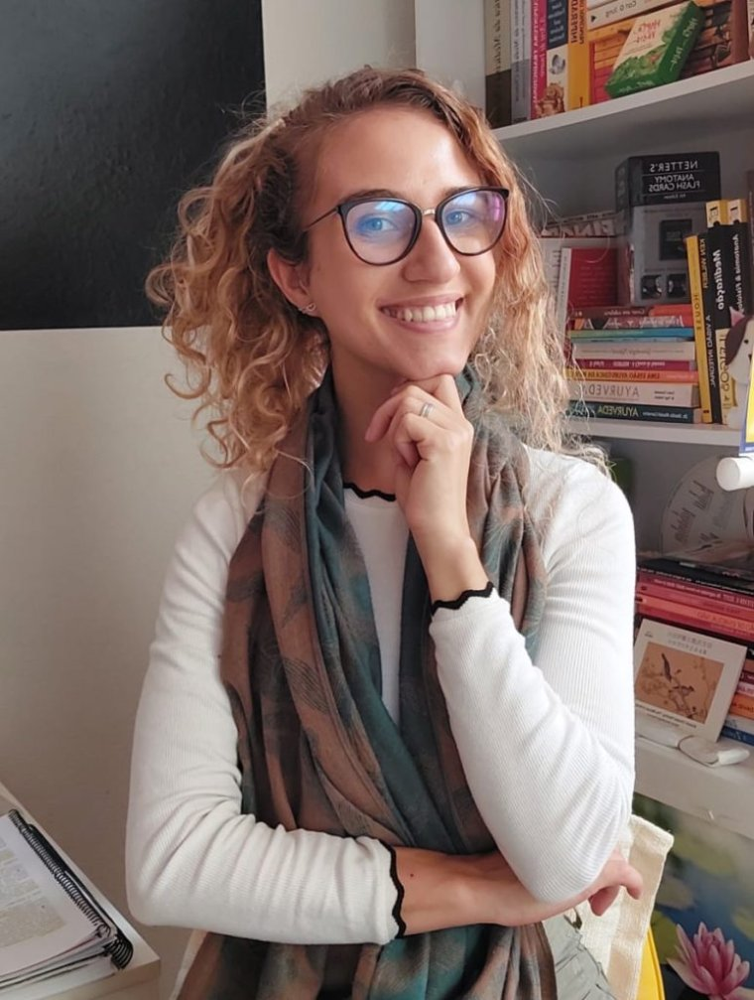

Naturóloga
Sobre mim

O cuidar foi despertado em mim aos 14 anos, época em que meu avô precisou de cuidados mais específicos por causa da diabetes. Ao acompanhar suas consultas, vi o quanto a alimentação e o estilo de vida interferem na nossa saúde — pode parecer óbvio, mas tendemos a negligenciar isso.
A vontade de cuidar das causas e da mudança de hábitos em saúde foi crescendo, principalmente depois de descobrir as Práticas Integrativas e Complementares em Saúde. Cursei três anos de Enfermagem e fui fazendo cursos à parte, até descobrir a Naturologia — que engloba todas essas práticas com o olhar da visão integrada e sistêmica em saúde.
Atualmente atendo em consultório, de forma presencial e online. Sou cofundadora e sócia da empresa Desperta Saúde e educadora em saúde na Casa do Zezinho, onde dou oficinas para crianças e pré-adolescentes de 6 a 13 anos, além de atender individualmente adolescentes de 14 a 21 anos.
Formação profissional
- Graduada em Naturologia pela Universidade Anhembi Morumbi
- Pós-graduanda em Psicologia Analítica com foco em mitos, contos e artes, no Instituto Freedom
- Curso de Reflexologia facial, podal e quirodal, pelo Religare
- Curso de Cromopuntura com o naturólogo Alan Assis
- Curso de Dietoterapia Chinesa
- Curso prático de Ventosaterapia pelo CEPVIDA
- Curso de Meridianos Miofasciais e Práticas Corporais para a saúde postural, com foco em automassagem, pelo Instituto D'Aroni
- Reiki nível I do sistema Usui, pelo Religare
- Curso de Fitoterapia Indígena, promovido por Vivência na Aldeia
- Monitora voluntária em Anatomia, Farmacologia e Microssistemas
- Cofundadora da 1ª Liga Acadêmica de Medicina Tradicional Chinesa da Naturologia na Universidade Anhembi Morumbi
- Facilitadora do Grupo de Estudos da Liga de MTC
- Três vezes aluna de honra na graduação